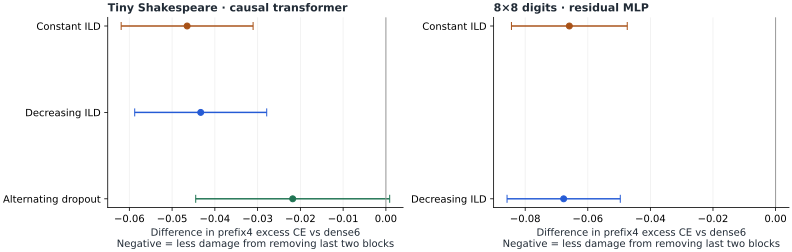
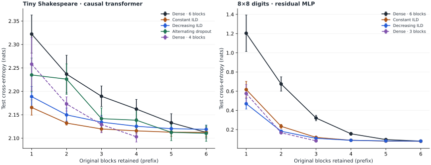

How much depth can a trained model lose?
Dropout reduces the damage from early exit on both toys. Absolute submodel quality, smaller-model controls, and the pattern of removed layers still matter.
A separate experimental follow-up to the paper review: a small causal language model and a handwritten-digit classifier trained with and without layer dropout. All reported measurements below are newly executed local experiments.
Increasing layer dropout (ILD) makes deeper blocks more likely to be omitted during training. We compare a constant schedule with a schedule that decreases dropout to zero over time.
Larger follow-up: A100 experiments with GPT, a vision transformer, and ConvNeXt ↗.
Quality as blocks are removed.
Choose a task and an evaluation pattern. The same trained final head is used at every retained depth. No model is fine-tuned after pruning.
Loading measured curves. Static figures and tables follow.
A smaller dense model reaches its own full depth at three or four blocks. Its excess loss is zero there by definition; compare its absolute CE as an architecture control. Missing depths are not extrapolated.
Numerical values behind the current view
The primary endpoint: damage from removing two blocks.
For each six-block run, measure the increase in test cross-entropy when keeping only blocks 1–4. Then pair each dropout run with the dense run having the same seed. This distinguishes robustness from the quality of the starting full model.
Primary difference = D₄(dropout) − D₄(dense₆)
Negative paired differences mean less pruning damage. Every interval below uses five training seeds (Student t, four degrees of freedom), not test examples or the number of masks. The two ILD recipes are the planned primary comparisons; intervals are unadjusted. Other mask/depth results are exploratory.
Tiny causal transformer · character prediction
Dense early-exit CE is 2.1621, versus 2.1254 for decreasing ILD and 2.1156 for constant ILD. The decreasing recipe's paired difference in pruning damage is -0.0433 [-0.0587, -0.0279] nats per character.
| Training recipe | Full CE | Prefix4 CE | Excess CE | Paired excess-CE difference vs dense6 mean [95% interval] |
|---|---|---|---|---|
| Dense · 6 blocks | 2.1123 | 2.1621 | 0.0498 | reference |
| Constant ILD | 2.1123 | 2.1156 | 0.0033 | -0.0465 [-0.0619, -0.0311] |
| Decreasing ILD | 2.1189 | 2.1254 | 0.0065 | -0.0433 [-0.0587, -0.0279] |
| Alternating dropout | 2.1103 | 2.1383 | 0.0280 | -0.0218 [-0.0445, +0.0009] |
| Dense · 4 blocks | 2.1030 | 2.1030 | 0.0000 | architecture control |
8×8 digits · residual MLP
Dense early-exit CE is 0.1563, versus 0.0886 for decreasing ILD. Its paired difference in pruning damage is -0.0677 [-0.0858, -0.0496] nats per example. Full-model classification accuracy is approximately 98.3% for the three six-block methods; the clearest gain is in pruning CE, not full-model accuracy.
| Training recipe | Full CE | Prefix4 CE | Excess CE | Paired excess-CE difference vs dense6 mean [95% interval] |
|---|---|---|---|---|
| Dense · 6 blocks | 0.0800 | 0.1563 | 0.0763 | reference |
| Constant ILD | 0.0784 | 0.0888 | 0.0104 | -0.0659 [-0.0844, -0.0474] |
| Decreasing ILD | 0.0800 | 0.0886 | 0.0086 | -0.0677 [-0.0858, -0.0496] |
| Dense · 3 blocks | 0.0828 | — | — | architecture control |
The separately trained dense4/dense3 rows are absolute-quality controls with fewer parameters and lower training block work. Their own endpoint's zero degradation is tautological, so they are excluded from the primary robustness comparison.

Depth is only part of the story.
At three retained blocks, there are twenty possible six-block subnetworks. They need not have the same loss. ILD never drops original block 1; deleting it is outside that training-mask distribution. Alternating dropout also preserves blocks 3 and 5 throughout training.
Task follows the selector in the curve explorer. Filled boxes identify retained original blocks, in their original order. The curve explorer distinguishes first-block-preserving subsets from unrestricted deletion.
Every subset was evaluated, so there is no random mask-sampling error at a given depth. Uncertainty still comes from training seeds and the finite evaluation data. Sorting this plot by loss does not create a validated best-subnetwork search method; selecting a deployment mask would require separate validation.
What these experiments reproduce.
A structural robustness effect
The main claim tested is that training with omitted residual blocks makes the unchanged trained model tolerate depth reduction. The language-model experiment directly uses causal attention, shared attention/FFN masks and a reused final language-model head. The classifier tests whether the effect also appears in a different task and architecture.
Persistence through a decreasing schedule
DTS ends at zero dropout and is evaluated densely or with fixed pruning. Robustness at that endpoint is evidence that useful tolerance remains after annealing. It does not establish persistence after a long, additional dense continuation; that experiment was not run.
A competitive small-model control
Depth robustness is useful when one stored model must serve several depths. It does not imply that its pruned version beats a smaller model trained directly. On digits, dense3 has full CE about 0.0828, better than the constant/decreasing ILD three-block prefixes (about 0.1187/0.1087). Inspect the four-block dense transformer control for the same distinction in language modeling.
A limited recipe comparison
Constant and decreasing ILD have the same expected dropout budget, but different exposure over time. Their relative performance here is specific to these data, optimizer settings and model sizes. A different ranking would not invalidate the paper's measured rankings in its own models.

Executed protocol.
| Language model | Digits classifier | |
|---|---|---|
| Data | Tiny Shakespeare, immutable public revision. Contiguous 80/10/10 character split; training-only vocabulary. | scikit-learn 8×8 digits, 1,797 images; fixed stratified 60/20/20 row split; train-only normalization. |
| Architecture | 6 causal transformer blocks, width 64, 4 attention heads, FFN 256/GELU, learned absolute positions. 312,448 parameters. | 64-pixel embedding, 6 pre-LayerNorm residual MLP blocks of width 64 with FFN 128/GELU, final 10-class head. 105,162 parameters. |
| Controls | Dense 6; constant ILD; decreasing ILD; constant alternating dropout; dense 4. | Dense 6; constant ILD; decreasing ILD; dense 3. |
| Training | 800 steps, batch 16, context 64: 819,200 character targets per run. | 600 steps, batch 128: 76,800 sampled training presentations per run. |
| Optimizer | AdamW, matrix weight decay 0.01, 20-step warmup, cosine cooldown to 10% of initial LR, gradient clipping 1. | AdamW, weight decay 0.01, cosine cooldown to 10% of initial LR, gradient clipping 1. |
| Tuning | 5 rates × 2 tuning seeds per treatment; full-depth validation CE selects LR. | 5 rates × 2 tuning seeds per treatment; full-depth validation CE selects LR. |
| Final replication | 5 independent seeds per treatment; paired initialization and sampled data streams across six-block methods. | 5 independent seeds per treatment; paired initialization and training batches across methods. |
| Held-out scoring | 64 nonoverlapping validation windows, 128 nonoverlapping test windows; 8,192 scored test characters. | 359 validation and 360 test images. No test-label adaptation. |
| Pruning | All 63 nonempty subsets for each six-block model; all 15 for dense 4. | All 63 nonempty subsets for each six-block model; all 7 for dense 3. |
Across the final grids there are 90 tuning runs, 45 final evaluation runs, and 2315 model/subset evaluations. Earlier development and boundary-search runs are archived separately; they do not provide additional independent seeds.
Exact dropout and optimizer semantics
For ILD, p(ℓ,t)=pmax·ℓ/(L−1)·f(t), with zero-based ℓ. Constant uses pmax=0.4 and f(t)=1; decreasing uses pmax=0.8 and f(t)=1−t/(T−1). Both omit 20% of example-block work in expectation. The transformer alternating arm drops original blocks 2, 4, 6 with constant probability 0.4.
In the transformer, attention and FFN share one Bernoulli mask per sequence and block. The same inverse-survival multiplier is applied separately to each residual branch, following the reviewed paper's Eq. 6. The classifier has one residual MLP branch per block. Evaluation uses deterministic scale 1 for every retained block, unchanged final normalization and readout, and unchanged layer order.
Training uses compute-then-mask execution, so all branches are computed. Fully masked branches still have explicit zero gradients, allowing AdamW momentum/decay to act. These runs do not measure sparse training acceleration. Expected active work and realized mask counts are logged separately from executed work.
Learning-rate selection and development history
Transformer: Dense · 6 blocks: 0.01, Constant ILD: 0.01, Decreasing ILD: 0.01, Alternating dropout: 0.01, Dense · 4 blocks: 0.01. The initial partial grid [.001,.003,.01] showed validation improvement at the upper boundary. Every method's grid was expanded to [.001,.003,.01,.02,.03] before final evaluation. All final choices are interior.
Digits: Dense · 6 blocks: 0.0003, Constant ILD: 0.0003, Decreasing ILD: 0.0003, Dense · 3 blocks: 0.0003. The initial [.001,.003,.01] grid selected its lower boundary. An equal extension to [.0001,.0003,.001,.003,.01] followed. The initial completed experiment, including its test outputs, is preserved in initial_grid/. The extension and all LR choices used full-depth validation CE, not test or pruned performance; this is a disclosed development history, not a claim of untouched-test preregistration.
The digits effect size is sensitive to LR. In the initial grid, paired prefix4 degradation improvements were about 0.0164/0.0142 nats for constant/decreasing ILD; in the final grid they are about 0.0659/0.0677. Near-tied dense validation losses can accompany substantially different robustness. The final report should therefore not be read as an optimizer-independent effect size.
Dataset and statistical boundaries
The digits loader contains 1,797 examples copied from the original UCI test set. Our random row split is not UCI's official writer-disjoint protocol, and the task is not MNIST. Tiny Shakespeare is a small literary corpus sampled with replacement; character-level CE and perplexity are not comparable numerically to the paper's tokenizer-based losses.
For exact subset averages, first average individual-submodel losses within each training seed, then compute the mean and t interval over seeds. Neither masks nor test examples are treated as independent training replicates. These intervals capture seed variation on one fixed split and omit dataset/split uncertainty. No multiplicity correction is applied; inspect the primary endpoint separately from exploratory depth/pattern comparisons.
What has not been reproduced.
These tests do not reproduce the paper's 271M–8.2B models, proprietary training mixture, CompleteP scaling, ALiBi/squared-ReLU architecture, accelerator throughput, or long-token-budget behavior. The transformer is a causal-model mechanism test at about 0.31M parameters. The classifier is a separate generality check.
No early-exit adapters, learned routers, calibration, or auxiliary exit losses are used. There is no inference latency benchmark, generation-quality study, energy measurement or speculative verification loop. Better pruned CE is relevant to a drafter's quality, but it does not establish a speedup or lossless decoding.
Matched training steps and examples are the primary fairness condition. Dropout arms have 20% less modeled active-block work; actual training evaluates every branch. Smaller dense controls use fewer parameters and less block work. This report makes no compute-optimal frontier claim.
The strongest supported interpretation is a reduction in damage from removing layers under these conditions. Submodel quality still depends on which blocks are retained, optimizer choices, full-model quality, and whether directly training a smaller model is an acceptable alternative.
Reproduce, inspect, and reuse.
External experiment cost: $0. No Modal jobs or paid experiment services were launched. The $50 ceiling was not approached.
All compute ran on the local Apple M5 Max CPU in float32. Transformer runs used up to four isolated worker processes with one PyTorch thread each; digits used one thread. Electricity and hardware amortization were not priced. Concurrent run timings are provenance, not a controlled speed comparison.
python3 -m venv experiments/.venv experiments/.venv/bin/python -m pip install -r experiments/requirements.txt experiments/.venv/bin/python experiments/depth_lm/fetch_data.py experiments/.venv/bin/python experiments/depth_lm/run.py --part all # Digits dependencies and run instructions: # experiments/depth_digits/README.md
Transformer code & raw data · Digits code & raw data · Plot data JSON · Experiment manifest · Report as Markdown
Checks cover disjoint splits, deterministic evaluation, full/all-kept equivalence, pruning versus explicit zero residuals, transformer causality, schedule means/endpoints, and report calculations. Raw CSVs retain every seed and layer mask; source/data hashes identify the executed inputs. Local checkpoints are reproducible and excluded from Git.
Content fingerprints
Transformer source SHA-256: cd434863c53590468e2efbf50e970c7df65b9f0973fe4ea97f4085a1a5a05707
Digits source SHA-256: 005224dac18922e2d38ca2c669124d6a848db585ee4564896a92456468d4da80
Tiny Shakespeare bytes SHA-256: 86c4e6aa9db7c042ec79f339dcb96d42b0075e16b8fc2e86bf0ca57e2dc565ed
Sources.
- Elhoushi et al. Don't Drop Dropout: Optimizing Layer Sparsity for Efficient LLM Training and Inference. Extended ICML 2026 version, arXiv v1, 4 September 2026. Target concepts: Eqs. 6–9, §8.1 depth robustness.
- Fan, Grave and Joulin. Reducing Transformer Depth on Demand with Structured Dropout. ICLR 2020. Earlier evidence for pruning subnetworks after structured-dropout training.
- Elhoushi et al. LayerSkip: Enabling Early Exit Inference and Self-Speculative Decoding. ACL 2024. Related motivation; its auxiliary exit training is not used here.
- Karpathy. Tiny Shakespeare in char-rnn. Immutable corpus revision used for the character task.
- scikit-learn. load_digits documentation. Dataset size, dimensionality and original UCI-test-set provenance. See also UCI Optical Recognition of Handwritten Digits.
All plots and numeric findings are from the locally executed experiments, not digitized paper figures. The extended paper review provides the separate literature and mathematical audit.